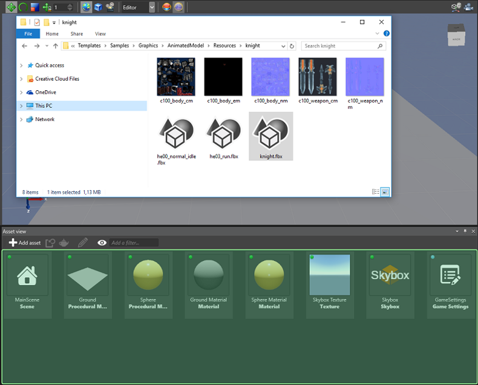
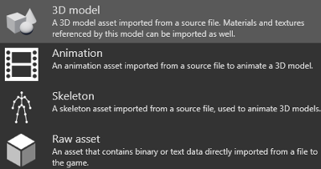
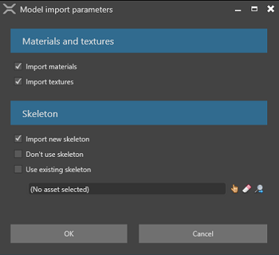

アニメーションのインポート
初級 デザイナー
モデルをアニメーション化するには、次の 3 種類のアセットを使用する必要があります。
- モデル
- スケルトン
- アニメーション
これらのアセットは、3D モデル ファイルからインポートできます。Stride でサポートされているモデル ファイルの種類は、.3ds、.blend、.dae、.dxf、.fbx、.md2、.md3、.obj、.x です。
モデル、スケルトン、アニメーションをモデル ファイルからインポートする
モデル ファイルをエクスプローラーから［Asset view］ (既定では下部のペイン) にドラッグします。

または、［Asset view］で次のようにします。
1a.
 をクリックし、［Import directly from files］を選択します。
をクリックし、［Import directly from files］を選択します。
2b. ファイルを参照して、［Open］をクリックします。
モデル ファイルから［3D model]、［Animation］、[Skelton］のどれをインポートするかを指定します。

*［3D model］を選択した場合、Stride はモデル ファイル内で見つかった追加のマテリアル、テクスチャ、スケルトンをインポートできます。また、モデルからスケルトンをインポートすること (［Import new skeleton］)、スケルトンをインポートしないこと (［Don't use skeleton］)、または下のフィールドで異なるスケルトンを指定すること (［Use existing skeleton］) もできます。

*［Skeleton］を選択した場合は、スケルトンだけがモデル ファイルからインポートされます。たとえば、ノードのサブセットを使用する新しいスケルトンに使用する場合に、これを行うことがあります。
*［Animation］を選択した場合は、アニメーションだけがモデル ファイルからインポートされます。通常のアニメーションの場合はこれで十分です。加算アニメーションの場合は、いくつか追加手順があります。詳細については、「加算アニメーション」を参照してください。
インポートしたモデル、アニメーション、スケルトン アセットは、［Asset view］に追加されます。


［Property grid］ (既定では右側) で、アセットのプロパティを表示して編集できます。詳細については、「アニメーションのプロパティ」を参照してください。

アニメーション アセットを使用する
アニメーション アセットを使用するには、AnimationComponent をエンティティに追加した後、アニメーション アセットをアニメーション コンポーネントに追加します。詳細については、「アニメーションのセットアップ」を参照してください。
Note
スケルトンにメッシュを正しくスキニングしていることを確認してください。していない場合は、モデルを正しくアニメーション化できません。